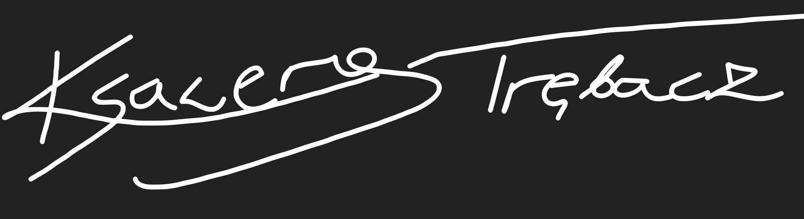

| Typ.danych | Opis | |
|---|---|---|
| track.name | character | Tytuł utworu |
| track.album.name | character | Tytuł albumu na którym był utwór |
| track.album.release_date | POSIXct | Data wypuszczenia utworu |
| track.duration_min | character | Czas trwania utworu |
| track.feat.artists | character | Nazwa artysty na feacie |
| track.artist | character | Nazwa głównego artysty |
| artist_age_at_release | numeric | Wiek artysty podczas wypuszczenia utworu |
| track.label | character | Label pod którym był wypuszczony utwór |
| tempo | numeric | Wartość BPM |
| artist_explicit | logical | Czy wsytępują przekleństwa? |
| fixed_genre | character | Gatunek muzyczny utworu |
| play_count | character | Ilość oodtworzeń na Spotify |
| youtube_views | character | Ilość odtworzeń na YouTube |
Najpopularniejsze utwory na Spotify
Wprowadzenie
W ostatnich latach rynek strumieniowego odtwarzania muzyki oraz platform wideo stał się jednym z najważniejszych elementów współczesnego przemysłu muzycznego. Spotify i YouTube odgrywają kluczową rolę w dystrybucji treści, dostarczając użytkownikom dostęp do ogromnej bazy utworów oraz wideoklipów. Wraz z rosnącą liczbą użytkowników na obu platformach, znaczenie analizy popularności muzyki na tych kanałach staje się coraz bardziej istotne.
Cel projektu
Celem niniejszego projektu jest wizualizacja danych dotyczących popularności muzyki na Spotify do 24.10.2024 roku, w tym najczęściej odtwarzanych utworów, artystów oraz gatunków muzycznych. Następnie wyniki te zostaną porównane z danymi dotyczącymi popularności tych samych utworów i artystów na platformie YouTube, uwzględniając liczbę wyświetleń oraz liczbę subskrybcji. Porównanie tych dwóch platform pozwoli na lepsze zrozumienie różnic w preferencjach użytkowników Spotify i YouTube.
Znaczenie tematu
Wnioski wyciągnięte z porównania mogą być użyteczne zarówno dla artystów, jak i dla przedstawicieli przemysłu muzycznego, dostarczając cennych informacji o strategiach promocji oraz preferencjach odbiorców na dwóch największych platformach multimedialnych.
Pozyskanie danych
Źródła danych
Dla realizacji projektu wybrano 1000 utworów, które zostały wybrane na podstawie rankingu ze strony Kworb.net, znanej z agregacji najpopularniejszych utworów na różnych platformach muzycznych. Wyselekcjonowane piosenki stały się podstawą do dalszych analiz w ramach projektu.
Spotify
Na podstawie listy 1000 utworów stworzono playlistę na Spotify, aby umożliwić dokładne pobranie danych dotyczących tych piosenek. Do pobrania szczegółowych danych użyto pakietu SpotifyR w języku R, który umożliwia komunikację z API Spotify. Dzięki temu uzyskano dostęp do takich informacji jak:
track.name
track.album.name
track.album.release_date
track.duration_min
track.feat.artists
track.artist
artist_explit
monthly_listeners
YouTube
Do pozyskania danych na temat wyświetleń, dat publikacji oraz innych informacji niedostępnych bezpośrednio w API YouTube, wykorzystano narzędzie Selenium.
youtube_views
youtube_subscribers
Wikipedia
Wykorzystana ją jako źródło informacji o artystach, które nie były dostępne w API Spotify ani innych źródłach. Dane te uzupełniały kontekst i pomagały w analizie demografii artystów.
track.genre
track.label
artist_country
artist_gender
artist_type
SongBPM
Narzędzie specjalizujące się w analizie tempa utworów (BPM), posłużyło do uzyskania szczegółowych informacji o charakterystyce muzycznej utworów. Dane zostały pobrane poprzez scrapowanie, co pozwoliło na zautomatyzowane zebranie brakujących metryk dla wybranych utworów.
- tempo
Kworb
Dostarczył nie tylko listę 1000 najpopularniejszych utworów, ale również szczegółowe dane na temat liczby odtworzeń na Spotify, które nie były dostępne bezpośrednio w API Spotify. Dzięki temu serwisowi możliwe było wzbogacenie analizy o metryki popularności, takie jak całkowita liczba streamów dla każdego utworu, co pozwoliło na dokładniejsze porównanie obu platform.
- play_count
Omówienie platform
Spotify
Jedna z najpopularniejszych aplikacji streamingowych, która umożliwia słuchanie milionów utworów muzycznych, podcastów i innych treści audio. Jest także platformą, na którą artyści z całego świata wrzucają swoje utwory, by dotrzeć do szerokiej publiczności. Spotify działa w modelu darmowym z reklamami oraz płatnym (Premium), oferującym brak reklam, lepszą jakość dźwięku i tryb offline. Platforma jest dostępna na wielu urządzeniach, rewolucjonizując sposób, w jaki ludzie słuchają muzyki na całym świecie.
YouTube
Jedna z największych platform wideo na świecie, która odgrywa kluczową rolę w dystrybucji muzyki i promocji artystów. Jest miejscem, gdzie twórcy mogą publikować swoje utwory, teledyski oraz materiały dodatkowe, takie jak koncerty czy vlogi, docierając do globalnej publiczności. Dzięki funkcji subskrypcji kanałów artyści mogą budować społeczność fanów, a YouTube zapewnia narzędzia do monetyzacji treści, m.in. reklamy i subskrypcje premium. Platforma wspiera także promocję nowych twórców dzięki algorytmom rekomendacji. YouTube to kluczowe narzędzie dla artystów, łączące wideo i muzykę, które rewolucjonizuje sposób, w jaki muzyka jest odkrywana i konsumowana.
Opis baz danych
all_tracksspotify2_results_final
id_counts_df_with_subscribers
| Typ.danych | Opis | |
|---|---|---|
| artist_name | character | Nazwa Artysty |
| count | numeric | Ilość utworów danego artysty w zestawieniu |
| artist_country_filtered | character | Kraj pochodzenia |
| artist_gender | character | Płeć |
| artist_type | character | Typ artysty, czy grupa czy solo |
| monthly_listeners | numeric | Miesięczna liczba słuchaczy na Spotify |
| youtube_subscribers | character | Ilość subskrybcji na YouTube |
Wizualizacje
Gatunki muzyczne
Muzyka jest niezwykle zróżnicowaną dziedziną sztuki, która obejmuje szeroki wachlarz gatunków, od tradycyjnych po nowoczesne, od klasycznych po eksperymentalne. Gatunki muzyczne to kategorie, w których klasyfikowane są utwory muzyczne na podstawie podobieństw w strukturze, brzmieniu, technikach wykonawczych, a także kontekście kulturowym i historycznym. Współczesne środowisko muzyczne jest szczególnie bogate w różnorodność, co znajduje odzwierciedlenie w licznych subkulturach, mieszankach stylów oraz fuzjach różnych tradycji muzycznych.
Wykres przedstawia dominację gatunku „pop” oraz jego podgatunków, takich jak „dance-pop”, „synth-pop” i „electropop”. Dużą popularnością cieszą się także „hip hop”, „trap” oraz „reggaeton”, co wskazuje na znaczenie muzyki latynoskiej i hip-hopowej. Widoczne są również „R&B” i „EDM”, które pozostają istotnymi gatunkami. Mniejsza rola „pop rock” sugeruje jego ograniczoną popularność. Ogólnie wykres podkreśla różnorodność współczesnej muzyki z wyraźną dominacją popu.
Wykres przedstawia średnią liczbę odtworzeń dziesięciu najpopularniejszych gatunków muzycznych na Spotify. Największą popularnością cieszy się chamber pop. Gospel pop zajmuje drugie miejsce, co wskazuje na wysokie zainteresowanie tymi bardziej melodyjnymi i emocjonalnymi gatunkami. W środkowej części zestawienia znajdują się industrial pop, progressive rock i trap-pop. Gatunki te balansują pomiędzy niszowością a szerokim odbiorem, co pozwala im utrzymać względnie stabilną popularność. Na niższych pozycjach plasują się post-grunge, pop rap, arena rock i stoner rock. Alt-pop, z najmniejszą średnią liczbą odtworzeń, wskazuje na swoją bardziej alternatywną i niszową naturę, która przyciąga mniejszą grupę odbiorców. Podsumowując, wykres pokazuje, że melodyjne i uniwersalne gatunki, takie jak chamber pop i gospel pop, dominują na Spotify, podczas gdy bardziej alternatywne style, jak alt-pop i stoner rock, mają ograniczoną publiczność. Wskazuje to na znaczenie dostępności i emocjonalnego przekazu w kształtowaniu popularności muzyki na tej platformie.
Wykres pokazuje, że klasyczne gatunki, takie jak arena rock i progressive rock, cieszą się największą popularnością na YouTube. Arena rock przyciąga szeroką publiczność dzięki chwytliwym melodiom i energetycznym występom, podczas gdy progressive rock zdobywa fanów swoją złożonością i artystycznym podejściem. Gatunki takie jak stoner rock, chamber pop i trap-pop zajmują środkowe pozycje, z umiarkowaną popularnością. Ich charakter łączy elementy niszowe z mainstreamem, co pozwala im dotrzeć do różnych grup odbiorców. Z kolei post-grunge, pop rap i gospel pop mają niższe wyniki, co sugeruje bardziej ograniczoną grupę słuchaczy, zależną od specyficznych zainteresowań kulturowych i artystów. Najmniej popularne są alt-pop i industrial pop, których niszowy i eksperymentalny charakter przyciąga węższą publiczność. Ogólnie, wykres ukazuje przewagę bardziej tradycyjnych i uniwersalnych gatunków nad stylami alternatywnymi, podkreślając rolę masowego odbioru w kształtowaniu popularności muzyki.
Wnioski
Współczesny krajobraz muzyczny ukazuje dominację gatunku „pop” i jego podgatunków, takich jak „dance-pop”, „synth-pop” i „electropop”, które cieszą się ogromną popularnością na różnych platformach. Gatunki takie jak „hip hop”, „trap” i „reggaeton” podkreślają znaczenie muzyki latynoskiej i hip-hopowej, a „R&B” i „EDM” wciąż odgrywają istotną rolę. Na Spotify największą popularnością cieszą się melodyjne i emocjonalne gatunki, takie jak chamber pop i gospel pop, co wskazuje na znaczenie dostępności i emocjonalnego przekazu. Gatunki takie jak industrial pop, progressive rock czy trap-pop zajmują środkowe pozycje, balansując między niszowością a szerokim odbiorem, podczas gdy bardziej alternatywne style, jak alt-pop czy stoner rock, przyciągają mniejszą grupę odbiorców. Z kolei na YouTube największą popularność zdobywają klasyczne gatunki, takie jak arena rock i progressive rock, które przyciągają szeroką publiczność dzięki chwytliwym melodiom, energii i artystycznemu podejściu. Gatunki niszowe, takie jak alt-pop czy industrial pop, mają bardziej ograniczoną publiczność, co podkreśla różnice w preferencjach użytkowników różnych platform. Ogólnie rzecz biorąc, analiza wskazuje na dominację melodyjnych i uniwersalnych gatunków, przy jednoczesnym zachowaniu miejsca dla bardziej eksperymentalnych i alternatywnych stylów, co podkreśla różnorodność współczesnej muzyki i wpływ platform na kształtowanie jej popularności.
Tempo
Tempo jest jednym z podstawowych elementów muzycznych, który odnosi się do szybkości wykonywania utworu. W muzyce, tempo określa, jak szybko lub wolno ma być grana dana kompozycja. Jest to kluczowy czynnik wpływający na charakter utworu, jego energię oraz emocjonalny ładunek. Tempo nie tylko definiuje dynamikę wykonania, ale również pomaga muzykom w synchronizacji, tworząc wyraźne odniesienie do rytmu i frazowania. W tradycyjnej notacji muzycznej tempo często oznaczane jest przy pomocy słów, takich jak allegro (szybko), adagio (wolno) czy andante (w tempie spacerowym), a także za pomocą dokładnych wartości liczbowych, takich jak liczba uderzeń na minutę (BPM - beats per minute). Tempo ma ogromne znaczenie nie tylko w klasycznej muzyce, ale także w innych gatunkach, takich jak jazz, rock, czy muzyka elektroniczna. Zmieniając tempo, artyści mogą wywołać różne reakcje emocjonalne u słuchaczy, wprowadzając ich w stan relaksu, napięcia lub radości.
Różne gatunki muzyczne różnią się zarówno pod względem średniego tempa, jak i liczby odtworzeń. Gatunki takie jak reggaeton, house, EDM, tropical house czy dance charakteryzują się wyższym tempem (powyżej 120 BPM) i jednocześnie cieszą się dużą popularnością, co widać po wysokiej liczbie odtworzeń. Szczególnie gatunki pop i jego odmiany, takie jak dance-pop, electropop czy synth-pop, osiągają jednocześnie umiarkowane do wysokiego tempa oraz bardzo wysoką liczbę odtworzeń, co wskazuje na ich globalną popularność. Z kolei wolniejsze gatunki, takie jak soul, R&B czy soft rock, mają niższe średnie tempo (poniżej 120 BPM) i są odtwarzane rzadziej. Mniej popularne gatunki, takie jak regional mex, christmas czy folk-pop, charakteryzują się zróżnicowanym tempem, ale liczba ich odtworzeń pozostaje stosunkowo niska w porównaniu do dominujących gatunków tanecznych i popowych. Podsumowując, szybkie i energetyczne gatunki muzyczne dominują pod względem popularności, podczas gdy wolniejsze style oraz mniej mainstreamowe gatunki pozostają w tyle zarówno w liczbie odtworzeń, jak i w tempie. Widać wyraźną zależność między dynamiką utworów a ich globalnym zasięgiem.
Na podstawie wykresu można zauważyć, że utwory z Indii, Meksyku czy Stanów Zjednoczonych cieszą się największą popularnością, co widać po wysokiej średniej liczbie odtworzeń. W tych krajach, niezależnie od tempa muzyki, utwory przyciągają dużą liczbę słuchaczy. Z kolei kraje takie jak Tajlandia czy Uganda mają znacznie mniejszą liczbę odtworzeń, co może wynikać z mniejszej globalnej rozpoznawalności ich artystów. Jeśli chodzi o tempo utworów, widać, że kraje takie jak Rosja czy Nowa Zelandia mają muzykę o wyższym średnim tempie. Natomiast muzyka z Jamajki czy Barbadosu charakteryzuje się wolniejszym tempem, co może być związane z lokalnymi gatunkami muzycznymi, takimi jak reggae czy calypso. Nie widać jednak wyraźnej zależności między tempem utworów a ich popularnością. To sugeruje, że o sukcesie muzyki decydują inne czynniki, takie jak globalny zasięg artystów, gatunki muzyczne czy różnice kulturowe w preferencjach słuchaczy.
Wnioski
Analiza tempa i popularności utworów ujawnia, że szybkie, energetyczne gatunki, takie jak reggaeton, house, EDM czy dance-pop, cieszą się największym zainteresowaniem słuchaczy, osiągając zarówno wysokie średnie tempo (powyżej 120 BPM), jak i dużą liczbę odtworzeń. Gatunki te dominują globalnie, co podkreśla ich uniwersalny charakter i zdolność do przyciągania szerokiego grona odbiorców. Z kolei wolniejsze style, takie jak soul, R&B czy reggae, oraz mniej popularne gatunki, takie jak folk-pop czy muzyka świąteczna, mają mniejszy globalny zasięg, co znajduje odzwierciedlenie w niższej liczbie odtworzeń. Analizując dane geograficzne, widać, że muzyka z krajów takich jak Indie, Meksyk czy Stany Zjednoczone cieszy się wyjątkową popularnością, niezależnie od tempa, co można przypisać globalnemu zasięgowi artystów z tych regionów. Natomiast kraje o mniejszym zasięgu, takie jak Tajlandia czy Uganda, mają niższą liczbę odtworzeń, co może wynikać z ograniczonej rozpoznawalności ich muzyki na światowej scenie. Mimo że w niektórych krajach, takich jak Rosja czy Nowa Zelandia, tempo muzyki jest wyższe, a w innych, takich jak Jamajka czy Barbados, niższe, nie można wskazać jednoznacznego związku między tempem a popularnością. Popularność utworów wydaje się bardziej zależna od takich czynników jak gatunek, globalny wpływ artystów i kulturowe preferencje słuchaczy.
Czas trwania
Czas trwania utworu muzycznego jest istotnym elementem, który zmienia się w zależności od gatunku i preferencji słuchaczy. Współczesne utwory popowe są zazwyczaj krótsze, co jest dostosowane do wymagań platform streamingowych i preferencji konsumentów. Natomiast w gatunkach takich jak rock czy muzyka klasyczna, utwory często mają dłuższą formę z bardziej złożoną strukturą. Trendy w muzyce, takie jak popularność remiksów w muzyce elektronicznej, również wpływają na długość utworów. Co więcej, platformy streamingowe zmieniają preferencje słuchaczy, którzy częściej słuchają krótszych piosenek, co sprawia, że artyści coraz częściej tworzą utwory dostosowane do tych wymagań. Długość utworu to więc nie tylko aspekt techniczny, ale także kulturowy, zależny od aktualnych trendów w muzyce oraz preferencji słuchaczy.
Wykres przedstawia rozkład długości trwania utworów muzycznych. Można zauważyć, że większość utworów mieści się w przedziale od około 2 minut i 30 sekund do 4 minut. Rozkład ten jest symetryczny, z największą koncentracją w okolicach 3 minut i 30 sekund, co wskazuje, że jest to typowa długość dla większości piosenek. Warto zauważyć, że bardzo krótkie utwory (poniżej 2 minut) oraz długie utwory (powyżej 5 minut) są rzadkością, co jest widoczne w wąskich końcach rozkładu. Oznacza to, że standardowe długości utworów są silnie ugruntowane w określonych ramach czasowych, co może wynikać z przyzwyczajeń słuchaczy lub specyfiki przemysłu muzycznego. Podsumowując, utwory o długości od 3 do 4 minut są najbardziej typowe, co czyni je dominującym formatem w muzyce popularnej. Dłuższe i krótsze utwory są mniej popularne, co sugeruje pewien standard w tworzeniu muzyki dostosowany do preferencji słuchaczy.
Wiek artystów
Wiek artystów to istotny aspekt w analizie muzyki, który może oferować ciekawe wnioski na temat ich kariery, stylu twórczości, a także związku z popularnością ich utworów. Wiek artysty w kontekście muzyki może wpłynąć na wybory artystyczne, preferencje odbiorców oraz sukces komercyjny. W szczególności, młodsze pokolenia artystów mogą być bardziej skłonne do eksperymentowania z nowymi gatunkami muzycznymi czy technologiami, podczas gdy starsi artyści często odnoszą się do tradycji lub mają już wykształcony własny styl. Analizując zależność między wiekiem artysty a liczbą odtworzeń utworów, możemy zbadać, czy młodsze, świeże talenty zyskują większą popularność na platformach streamingowych, takich jak Spotify, czy też czy starsi artyści utrzymują wysoki poziom zainteresowania swoją twórczością. Badanie tego typu może również wskazać na zmieniające się preferencje słuchaczy oraz na to, jak wiek artysty może wpływać na sposób, w jaki odbiorcy reagują na różne gatunki i style muzyczne.
Zależność między wiekiem artysty a liczbą odtworzeń na Spotify wskazuje, że młodsi artyści, szczególnie w przedziale wiekowym do 30 lat, cieszą się największą popularnością. Widać wyraźne skupisko wysokiej liczby odtworzeń wśród artystów z tej grupy wiekowej. Wyjątki, takie jak pojedyncze punkty z ekstremalnie wysoką liczbą odtworzeń, również znajdują się w tej kategorii. Wraz ze wzrostem wieku artystów liczba odtworzeń wyraźnie spada, co ilustruje nachylenie linii trendu w dół. Dla artystów powyżej 50. roku życia liczba odtworzeń jest znacznie niższa, a dane wskazują na coraz rzadsze występowanie wyższych wyników w miarę przesuwania się na osi wieku. Artyści w wieku powyżej 70 lat mają marginalny udział w dużych liczbach odtworzeń. Zjawisko to może wynikać z większej obecności młodych artystów na platformach streamingowych oraz zmieniających się trendów muzycznych, które sprzyjają nowszym wykonawcom. Popularność artystów starszych jest natomiast bardziej stabilna, ale nie osiąga takich szczytów, jak w przypadku młodszych twórców.
Na podstawie przedstawionych danych można zauważyć, że liczba odtworzeń utworów muzycznych różni się w zależności od daty ich wydania. Utwory wydane przed rokiem 2000 charakteryzują się raczej stabilnym, umiarkowanym wzrostem liczby odtworzeń, z pojedynczymi przypadkami wyraźnie popularniejszych nagrań. Natomiast po roku 2000 widoczny jest gwałtowny wzrost rozproszenia punktów, co sugeruje, że popularność utworów stała się bardziej zróżnicowana. W szczególności, od około 2010 roku widać wyraźny skupisko utworów o relatywnie dużej liczbie odtworzeń, a niektóre z nich osiągają wyjątkowo wysokie wyniki. Linia trendu w postaci przerywanej czerwonej linii wskazuje ogólną tendencję wzrostu liczby odtworzeń w miarę zbliżania się do współczesności, mimo pewnego spłaszczenia tej tendencji w najnowszych latach.
Wnioski
Analiza popularności muzyki wskazuje na silne zależności między wiekiem artystów, datą wydania utworów a ich liczbą odtworzeń na Spotify. Młodsi artyści, zwłaszcza ci poniżej 30. roku życia, dominują pod względem popularności, przyciągając największą liczbę słuchaczy. Ich sukces można przypisać lepszemu dostosowaniu do współczesnych trendów muzycznych i obecności na platformach streamingowych. Wraz ze wzrostem wieku artystów liczba odtworzeń wyraźnie spada, co jest szczególnie widoczne w przypadku twórców powyżej 50. roku życia, którzy mają mniejszy udział w dużych wynikach odtworzeń. Podobna zależność dotyczy daty wydania utworów. Starsze utwory, zwłaszcza te sprzed roku 2000, mają stabilne, choć umiarkowane liczby odtworzeń, z nielicznymi wyjątkami. Natomiast po roku 2000 widoczny jest gwałtowny wzrost zróżnicowania popularności utworów, z wyraźnym skupiskiem nagrań o wysokich wynikach od około 2010 roku. Linia trendu potwierdza ogólną tendencję wzrostu liczby odtworzeń w miarę zbliżania się do współczesności, choć w ostatnich latach tempo tego wzrostu zaczyna maleć. Dane te podkreślają, że sukces muzyki jest ściśle powiązany z aktualnymi trendami, młodszymi artystami i nowoczesnymi formami dystrybucji, jak platformy streamingowe.
Wytwórnie muzyczne
Wytwórnie muzyczne odgrywają kluczową rolę w przemyśle muzycznym, nie tylko jako organizacje odpowiedzialne za produkcję i dystrybucję muzyki, ale także jako potężne instytucje, które kształtują trendy i wyznaczają ścieżki kariery dla artystów. Wytwórnie posiadają ogromny wpływ na to, jakie utwory trafiają do szerokiej publiczności i jak są promowane. Dzięki strategicznemu zarządzaniu swoimi zasobami, globalnym zasięgiem i olbrzymim budżetom marketingowym, potrafią przekształcać artystów w międzynarodowe gwiazdy, co ma nieoceniony wpływ na rozwój całej branży muzycznej.
Na podstawie przedstawionych danych można zauważyć, że największą liczbę piosenek reprezentuje wytwórnia Universal, która odpowiada za 352 utwory. Następnie, na drugim miejscu, znajduje się kategoria “Inne” z 249 piosenkami, co wskazuje na znaczący udział mniejszych, niezależnych wytwórni. Wytwórnia Sony zajmuje trzecie miejsce z liczbą 239 utworów, a Warner zamyka stawkę z 160 piosenkami. Rozkład ten sugeruje dominację dużych wytwórni muzycznych, takich jak Universal i Sony, które łącznie stanowią znaczną część analizowanej liczby utworów. Niemniej jednak udział mniejszych wytwórni, reprezentowany przez kategorię “Inne”, również odgrywa istotną rolę, wskazując na różnorodność źródeł muzyki na rynku.
Featy
W muzyce, termin “feat.” (skrót od “featuring”) odnosi się do artysty, który pojawia się jako gość w utworze głównego wykonawcy. Tego rodzaju współprace są często wykorzystywane do przyciągnięcia uwagi nowych słuchaczy i rozszerzenia zasięgu artystów. Współczesna muzyka popularna obfituje w utwory, które są wynikiem współpracy różnych artystów, a takie kolaboracje mogą znacząco wpłynąć na sukces piosenki. Artysta występujący gościnnie często wnosi unikalny styl, głos lub umiejętności, które uzupełniają muzykę głównego wykonawcy.
Analiza średniej liczby odtworzeń piosenek pokazuje, że utwory bez udziału gościnnych artystów stanowią 53% całości, podczas gdy utwory z udziałem gości (z feat.) osiągają 47%. Różnica między tymi kategoriami nie jest znaczna, co sugeruje, że obecność gościnnych artystów nie ma jednoznacznego wpływu na popularność piosenek. Obie grupy są niemal równomiernie reprezentowane, co może wynikać z różnorodnych preferencji słuchaczy oraz specyfiki promowania utworów w obu kategoriach.
Explit
W kontekście muzyki, termin “explicit” odnosi się do utworów zawierających treści, które mogą być uznane za nieodpowiednie dla niepełnoletnich słuchaczy. Zawartość ta może obejmować wulgaryzmy, agresję, treści seksualne, przemoc, narkotyki czy inne kontrowersyjne tematy. W wyniku tego, utwory oznaczone jako explicit są często filtrowane na platformach streamingowych, a ich dostępność może być ograniczona w zależności od lokalnych regulacji prawnych czy ustawień kont użytkowników. Oznaczenie “explicit” jest stosowane, aby umożliwić słuchaczom świadomość, że dany utwór zawiera tego typu treści, a także pozwala platformom takim jak Spotify, Apple Music, czy YouTube dostosować swoje rekomendacje do preferencji i ustawień użytkowników. Tego rodzaju etykieta jest szczególnie ważna w kontekście młodszych odbiorców, którzy mogą być narażeni na treści nieodpowiednie dla ich wieku. Chociaż utwory explicit mogą budzić kontrowersje, są również popularne wśród dorosłych słuchaczy, którzy cenią sobie artystyczną swobodę wyrażania emocji i opinii bez cenzury. Często artyści, którzy decydują się na takie oznaczenie, korzystają z tej swobody, by przekazać swoje prawdziwe, autentyczne doświadczenia, co może przyciągnąć uwagę szerokiej publiczności.
Średnia liczba odtworzeń piosenek z przekleństwami i bez przekleństw jest zbliżona, co wskazuje, że obecność przekleństw w tekstach utworów nie ma większego wpływu na ich popularność. Obydwie kategorie osiągają porównywalne wyniki, co sugeruje, że ten aspekt nie jest kluczowym czynnikiem decydującym o liczbie odtworzeń.
Pochodzenie artystów
Pochodzenie artystów ma istotny wpływ na ich twórczość, kariery i styl muzyczny. Może obejmować zarówno miejsce narodzin, jak i środowisko społeczne, w którym dorastali. Wpływa to na ich podejście do muzyki, wybór tematów i technik wykonania. Artysta wychowany w rodzinie muzycznej często ma większe szanse na rozwój kariery, mając dostęp do instrumentów i tradycji. Współczesna branża muzyczna umożliwia artystom wykorzystywanie swojego pochodzenia w celu wyróżnienia się i budowania tożsamości artystycznej, często tworząc narrację opartą na kulturze, historii czy doświadczeniach związanych z miejscem pochodzenia.
Mapa pokazuje, że największa liczba artystów pochodzi ze Stanów Zjednoczonych, co wyróżnia je jako główny ośrodek muzyczny na świecie. W innych częściach globu liczba artystów jest znacznie mniejsza, jednak obecność artystów w wielu krajach wskazuje na globalny charakter przemysłu muzycznego. Dominacja jednego regionu nie oznacza jednak wyłączności, ponieważ artyści pojawiają się w różnych zakątkach świata.
Płeć artysty
Płeć artystów ma wpływ na sposób, w jaki są postrzegani w przemyśle muzycznym oraz na tematykę ich twórczości. W przeszłości mężczyźni dominowali w muzyce, a kobiety napotykały na większe trudności związane z karierą i oczekiwaniami społecznymi. Choć dziś scena muzyczna jest bardziej otwarta, wciąż istnieją różnice w postrzeganiu muzyki tworzona przez mężczyzn i kobiety. Wielu artystów, niezależnie od płci, łamie stereotypy, tworząc muzykę, która wykracza poza tradycyjne role przypisane do ich płci. Zamiast skupiać się tylko na emocjach czy relacjach, jak to bywało w przeszłości, artyści podejmują różnorodne tematy, zmieniając sposób odbioru ich twórczości.
W branży muzycznej większość artystów stanowią mężczyźni, którzy zajmują ponad trzy czwarte całkowitego udziału. Kobiety stanowią mniejszą, choć znaczącą część, co wskazuje na ich obecność w branży, ale również na istnienie nierównowagi płci wśród artystów.
Średnia liczba odtworzeń na Spotify różni się w zależności od płci artysty i kraju pochodzenia. Artyści z Australii oraz Stanów Zjednoczonych osiągają najwyższą średnią liczbę odtworzeń, niezależnie od płci, co wskazuje na ich silną obecność na platformie. Kobiety z Kanady, Anglii i Szwecji mają wyraźnie wyższą średnią liczbę odtworzeń w porównaniu do mężczyzn z tych krajów, co może świadczyć o ich popularności w tych regionach. Z kolei w Puerto Rico oraz Szkocji mężczyźni dominują pod względem średniej liczby odtworzeń, co może wynikać z większego zainteresowania lokalną muzyką wykonywaną przez męskich artystów. W Meksyku i Kolumbii różnice między płciami są mniej wyraźne, co sugeruje bardziej zrównoważoną popularność artystów obu płci. Kraje takie jak Francja charakteryzują się stosunkowo niską średnią liczbą odtworzeń dla obu płci, co może wskazywać na mniejszą globalną widoczność artystów z tego regionu na Spotify.
Średnia liczba wyświetleń na YouTube różni się w zależności od płci artysty i kraju pochodzenia. Artyści z Australii oraz Stanów Zjednoczonych osiągają najwyższe wyniki, przy czym w Australii kobiety są wyraźnie bardziej popularne niż mężczyźni. W Stanach Zjednoczonych różnica między płciami jest mniej widoczna, co sugeruje równą popularność artystów obu płci na tej platformie. W krajach takich jak Francja, Meksyk i Szkocja mężczyźni dominują pod względem średniej liczby wyświetleń, co może wskazywać na większe zainteresowanie ich twórczością. Natomiast w Kanadzie i Szwecji kobiety osiągają wyraźnie wyższe wyniki, co może być wynikiem lokalnych preferencji muzycznych lub większej promocji artystek. W Puerto Rico średnia liczba wyświetleń jest stosunkowo niska, szczególnie w przypadku kobiet, co może sugerować mniejsze zainteresowanie tamtejszymi artystami na YouTube.
Wnioski
Analiza branży muzycznej pokazuje, że większość artystów stanowią mężczyźni, podczas gdy kobiety, choć w mniejszości, wyróżniają się popularnością w niektórych regionach. Średnia liczba odtworzeń na Spotify jest najwyższa dla artystów z Australii i Stanów Zjednoczonych, przy czym w krajach takich jak Kanada, Anglia czy Szwecja kobiety przewyższają mężczyzn pod względem popularności. Z kolei w Puerto Rico, Szkocji i Meksyku dominują mężczyźni, co może być związane z lokalnymi preferencjami muzycznymi. Na YouTube podobne trendy są widoczne: kobiety z Australii, Kanady i Szwecji osiągają wyższe wyniki niż mężczyźni, natomiast w Meksyku, Szkocji i Francji to mężczyźni mają przewagę. Ogólnie popularność artystów zależy od złożonych czynników, takich jak płeć, region oraz globalny zasięg artystów i ich muzyki.
Ilość utworów
Liczba utworów w naszym zestawieniu odnosi się do ilości piosenek danego artysty, które znalazły się w analizowanych danych. Wartość ta nie odzwierciedla całkowitej dyskografii artysty, lecz wskazuje na jego obecność i popularność w ramach wybranego zestawu informacji. Analiza tego wskaźnika pozwala zidentyfikować artystów, których twórczość najczęściej pojawia się w naszym zbiorze, co może świadczyć o ich wpływie na współczesną muzykę oraz o popularności na platformach streamingowych.
Porównanie liczby utworów oraz odtworzeń na YouTube i Spotify dla dziesięciu najpopularniejszych artystów pokazuje interesujące zależności. Artyści z większą liczbą utworów nie zawsze osiągają najwyższą liczbę odtworzeń, co wskazuje, że jakość i popularność poszczególnych piosenek odgrywają większą rolę niż sama liczba wydanych utworów. Najwyższe wartości odtworzeń, zarówno na YouTube, jak i Spotify, są osiągane przez artystów znajdujących się w centralnej i górnej części zestawienia, co sugeruje, że ich twórczość cieszy się dużą popularnością na obu platformach. Z kolei artyści z mniejszą liczbą utworów, ale wysoką liczbą odtworzeń, mogą wskazywać na globalne hity, które zdobyły ogromną popularność. Różnice w liczbie odtworzeń na obu platformach mogą wynikać z różnic w preferencjach użytkowników YouTube i Spotify, takich jak sposób konsumpcji treści, dostępność teledysków czy różnorodność bibliotek muzycznych. Dane te podkreślają, że sukces artystów nie zależy wyłącznie od ilości wydanej muzyki, ale także od ich zdolności do przyciągania szerokiej publiczności na różnych platformach.
Wyświetlenia i odsłuchania
Wyświetlenia i odsłuchania to kluczowe metryki w ocenie popularności artystów na platformach streamingowych. Na YouTube wyświetlenia oznaczają liczbę razy, kiedy wideo zostało obejrzane, natomiast na Spotify odsłuchania odnoszą się do liczby razy, gdy utwór został odtworzony przez użytkowników. Obie platformy stanowią ważne narzędzia w budowaniu zasięgu artystów, umożliwiając dotarcie do szerokiego grona słuchaczy i fanów.
YouTube osiągnęło szczyt popularności wcześniej niż Spotify, jednak jego popularność spadła znacznie szybciej. Spotify, w przeciwieństwie do YouTube, utrzymuje wyższą popularność nawet po swoim szczytowym okresie. Obie platformy zanotowały gwałtowny wzrost popularności po 2000 roku, co wiąże się z rozwojem technologii cyfrowych i zmianą sposobu konsumpcji muzyki. Trend wskazuje na przesunięcie preferencji użytkowników z YouTube na bardziej wyspecjalizowane platformy muzyczne, takie jak Spotify.
Subskrybcje i miesięczne odsłuchania
Platformy takie jak YouTube i Spotify odgrywają kluczową rolę w promocji muzyki i budowaniu popularności artystów. Liczba wyświetleń na YouTube odzwierciedla zaangażowanie widzów w wizualny aspekt utworów, natomiast odsłuchania wskazują na częstotliwość, z jaką odbiorcy wracają do muzyki. Porównanie tych dwóch wskaźników pozwala zrozumieć, jakie czynniki – takie jak styl muzyczny, teledyski czy trendy kulturowe – wpływają na sukces artystów i ich utworów na obu platformach.
Na podstawie wykresu można zauważyć, że istnieje pewna korelacja między liczbą subskrypcji na YouTube a liczbą miesięcznych słuchaczy na Spotify. Artyści z większą liczbą subskrybentów na YouTube mają tendencję do posiadania większej liczby miesięcznych słuchaczy na Spotify, choć nie jest to reguła dla wszystkich przypadków. Większość danych skupia się w przedziałach niższych wartości obu wskaźników, co sugeruje, że większość artystów osiąga umiarkowaną popularność na obu platformach. Jednak pojedyncze punkty w górnej części wykresu wskazują na artystów o wyjątkowej popularności, którzy dominują zarówno na YouTube, jak i na Spotify. Kolorystyka punktów dodatkowo podkreśla zróżnicowanie w wartościach, co wskazuje na istnienie artystów osiągających sukces w różnym stopniu na obu platformach.
Wnioski
Współczesny krajobraz muzyczny charakteryzuje się ogromną różnorodnością gatunków, formatów i preferencji, co odzwierciedla złożoność przemysłu muzycznego i jego globalny zasięg. Gatunki takie jak „pop”, „dance-pop”, „hip hop” i „reggaeton” dominują na platformach streamingowych i video, przyciągając szerokie grono odbiorców dzięki uniwersalnemu charakterowi i emocjonalnemu przekazowi. Jednocześnie bardziej niszowe style, jak „alt-pop” czy „stoner rock”, mają swoje oddane, choć mniejsze grupy słuchaczy. Analiza wskazuje, że tempo i długość utworów odgrywają kluczową rolę w ich odbiorze – najpopularniejsze są dynamiczne utwory o długości od 3 do 4 minut, co świadczy o dostosowaniu muzyki do preferencji słuchaczy. Sukces artystów w dużej mierze zależy od ich zdolności adaptacji do współczesnych trendów i obecności na platformach takich jak YouTube czy Spotify. Młodsi artyści, a także nagrania wydane po 2000 roku, cieszą się znacznie większą popularnością, co podkreśla znaczenie nowoczesnych form dystrybucji i zmieniających się oczekiwań odbiorców. Pomimo dominacji globalnych gigantów, takich jak Universal i Sony, niezależni twórcy odgrywają istotną rolę, co podkreśla różnorodność źródeł muzyki. Sukces artystów nie zawsze zależy od ilości wydanej muzyki – często kluczowe są pojedyncze hity przyciągające uwagę szerokiej publiczności. Platformy, takie jak YouTube i Spotify, różnią się w sposobie przyciągania użytkowników: YouTube, choć szybciej osiągnął szczyt popularności, ustępuje miejsca Spotify, które utrzymuje wyższy poziom zainteresowania dzięki wyspecjalizowanej ofercie muzycznej. Mimo to korelacja między subskrypcjami na YouTube a miesięcznymi słuchaczami na Spotify sugeruje, że obecność na obu platformach jest istotnym czynnikiem sukcesu artystów. Dominacja artystów z krajów takich jak Stany Zjednoczone, Meksyk czy Indie podkreśla globalny charakter rynku muzycznego, a różnice w popularności związane z płcią, gatunkami i regionami wskazują na różnorodność preferencji słuchaczy. Ogólnie rzecz biorąc, analiza danych ukazuje przemysł muzyczny jako dynamiczny ekosystem, w którym uniwersalne melodie i nowoczesne trendy współistnieją z bardziej alternatywnymi stylami, tworząc zróżnicowany obraz współczesnej muzyki.
Źródła
developer.spotify.com
Dane Kontaktowe
- Email: s103006@pollub.edu.pl
- GitHub: 